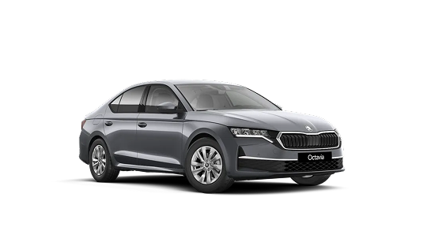

2.0 TDI DSG SCR
Technikai adatok
Gázolaj
DSG váltó 7 fokozatú
Elsőkerék hajtás
110 kW (150 LE)
Škoda Octavia
11 500 000 Ft
CO2 kibocsátás
111 - 169 g/km
Fogyasztás
4,3 - 7,5 l/100km

Elegáns és modern dizájn
Az Octavia új, érzelemgazdag dizájnnal kelt mély benyomást: a markáns vonalak, a kristályos LED-es fényszórók és hátsó lámpák, valamint az elegáns sziluett modern és dinamikus megjelenést kölcsönöz a járműnek.